library(texmex)
library(gridExtra)
library(GGally) #for exploratory plots
data(frwind, package = "mev")
#?frwindConditional extremes
Exploratory analyses
We begin by loading data and packages.
We will work with the standard implementation in the texmex package, which also comes with nice ggplot-graphics. Package information with vignettes for various modeling contexts can be found here.
First, for exploration of data, we show bivariate scatter plots and linear correlation coefficients for the wind speed data.
ggpairs(frwind, columns = 2:ncol(frwind))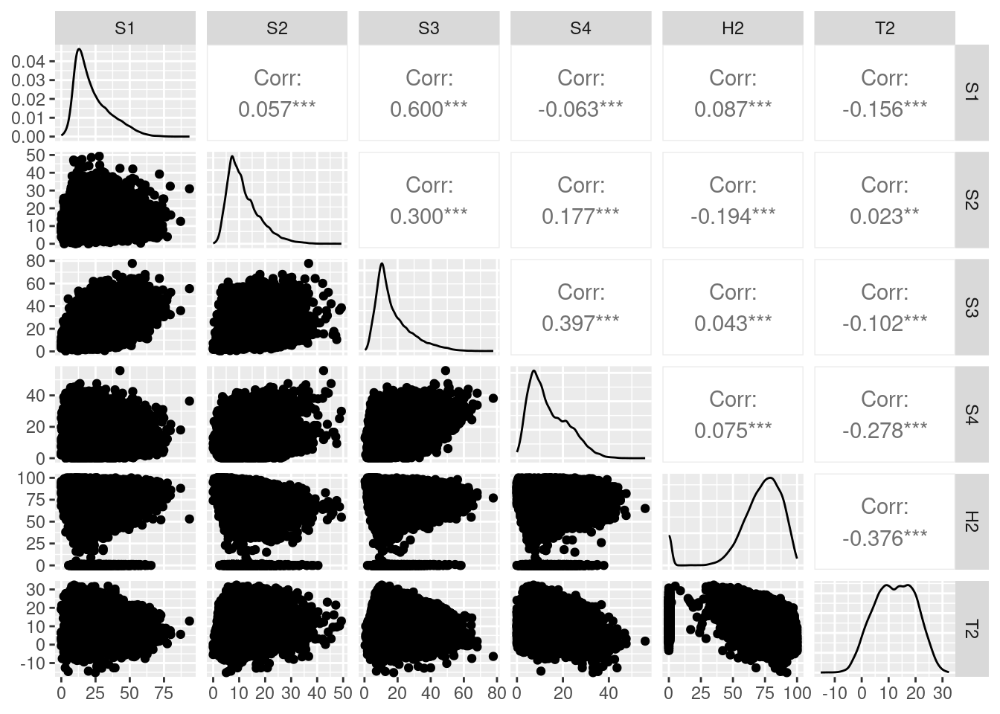
Let us check chi and chi-bar coefficients to see if there is asymptotic dependence. We give an example for stations \(S_2\) and \(S_3\).
chi23 <- chi(frwind[, c("S2", "S3")])
ggplot(chi23,
main = c("Chi"="Chi: S2 and S3",
"ChiBar"="Chi-bar: S2 and S3"),
xlim = c(0.8, 1))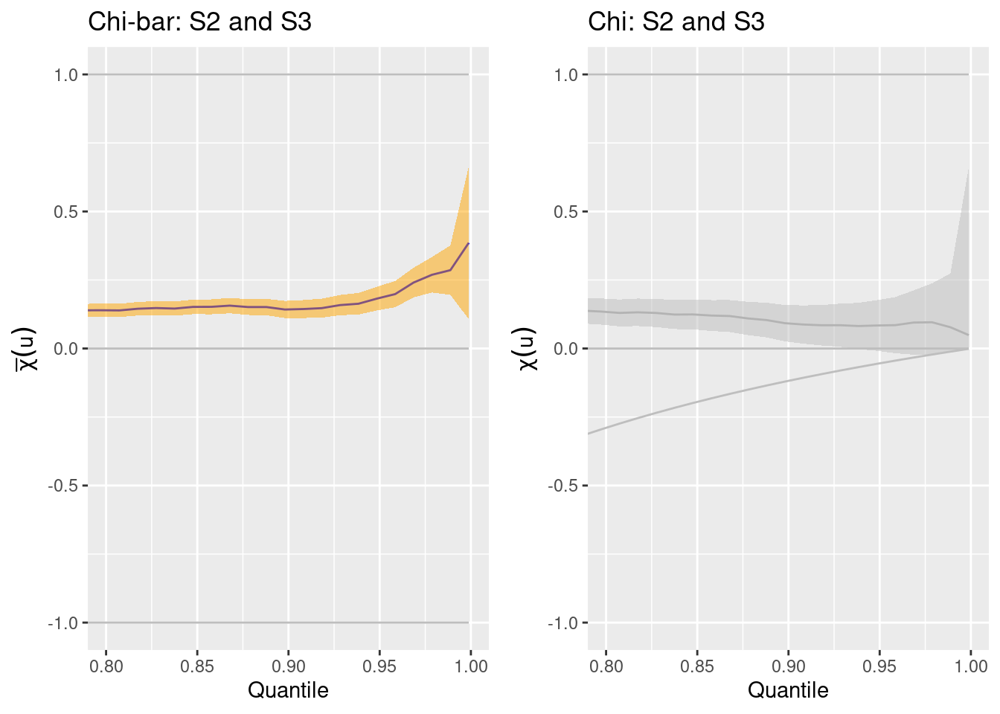
The behavior of both curves suggest that there is asymptotic independence. We can also plot multivariate conditional Spearman’s correlation coefficients across a sliding window of values of the variables. Executing the following requires more time.
bootmcs23 = bootMCS(
X = frwind[, c("S2", "S3")],
p = seq(0.5, 0.99, by = 0.01),
R = 25, # nb of bootstrap replicates
trace = 1000)
ggplot(bootmcs23, main = "MCS: S2 and S3")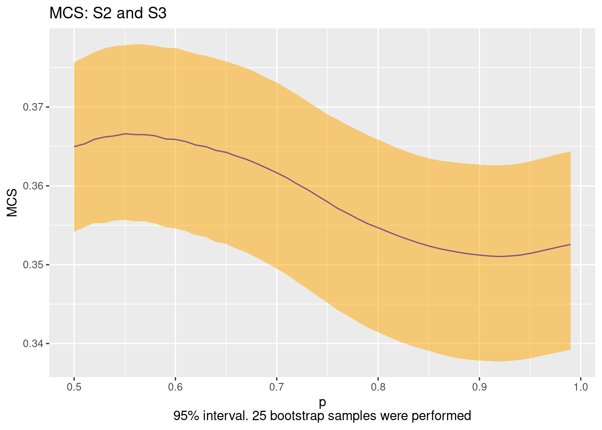
The behavior looks quite stable across different threshold levels.
Modeling conditional extremes
Now, we fit the multivariate conditional extremes model using mex. We here condition on the component \(j=2\). The mex function handles both marginal and dependence fits. We keep only those columns of frwind corresponding to wind speeds. Here, we use the same quantile (at level mqu) for marginal fits and dependence fits.
mex2 = mex(frwind[, paste0("S", 1:4)],
mqu = .95, # marginal quantile of cond.
penalty = "none", # penalized marginal estimation?
which = "S2") # conditioning variable
mex2mex(data = frwind[, paste0("S", 1:4)], which = "S2", mqu = 0.95,
penalty = "none")
Marginal models:
Dependence model:
Conditioning on S2 variable.
Thresholding quantiles for transformed data: dqu = 0.9502586
Using laplace margins for dependence estimation.
Constrained estimation of dependence parameters using v = 10 .
Log-likelihood = -1411.812 -1533.625 -1802.116
Dependence structure parameter estimates:
S1 S3 S4
a 0.1087 0.2592 0.4354
b 0.2524 0.3842 0.4189summary(mex2)
Marginal models:
S1 S2 S3 S4
Threshold 48.600 23.760 39.600 29.160
P(X < threshold) 0.951 0.950 0.952 0.952
sigma 7.987 5.366 8.351 4.523
xi -0.127 -0.126 -0.195 -0.129
Upper end point 111.560 66.353 82.337 64.168
Dependence model:
S1 S3 S4
a 0.109 0.25921 0.435
b 0.252 0.38417 0.419
c 0.000 0.00000 0.000
d 0.000 0.00000 0.000
m -0.206 0.00981 -0.357
s 0.940 0.92974 1.222Here are some diagnostic plots of the fitted model.
ggplot(mex2)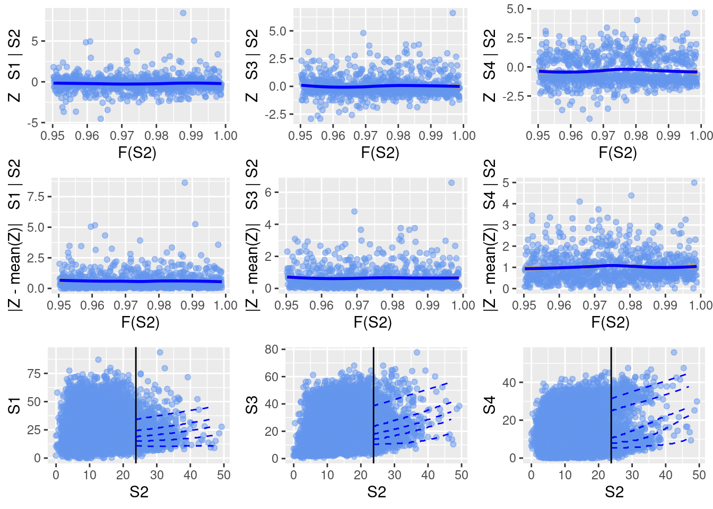
As assumed by the model, we do not see any notable dependence of residuals (\(\mathbf{Z}\)) on the level of the conditioning variable.
Note: to estimate only marginal parameters, we can use migpd; to estimate only the dependence with prespecified marginal estimates, we can use mexDependence. Here is an example of explicit two-step estimation.
marg = migpd(
data = frwind[,paste0("S", 1:4)],
mqu = 0.95,
penalty = "none")
mex2_twostep = mexDependence(marg, which = "S2")
mex2_twostepmexDependence(x = marg, which = "S2")
Marginal models:
Dependence model:
Conditioning on S2 variable.
Thresholding quantiles for transformed data: dqu = 0.95
Using laplace margins for dependence estimation.
Constrained estimation of dependence parameters using v = 10 .
Log-likelihood = -1411.812 -1533.625 -1802.116
Dependence structure parameter estimates:
S1 S3 S4
a 0.1087 0.2592 0.4354
b 0.2524 0.3842 0.4189In the end, the result of mex2_twostep is exactly the same as that of mex2.
Various diagnostics can be used to explore or validate tuning parameters such as the threshold. For example: do we have an appropriate marginal threshold? We can check this using parameter stability plots and mean-excess plots.
ggplot(
gpdRangeFit(frwind$S2,
umin = quantile(frwind$S2, .90),
umax = quantile(frwind$S2, .995),
nint = 21)) [[1]]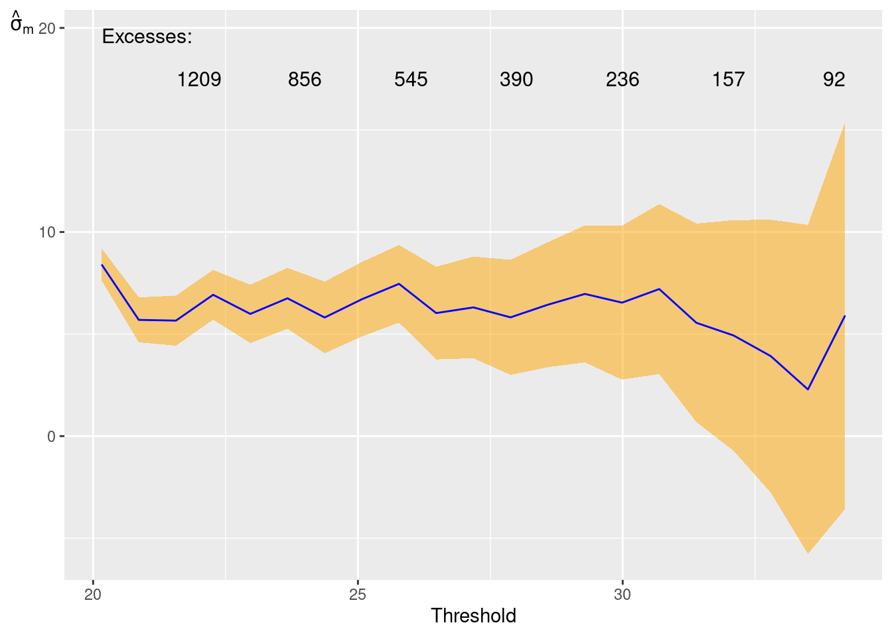
[[2]]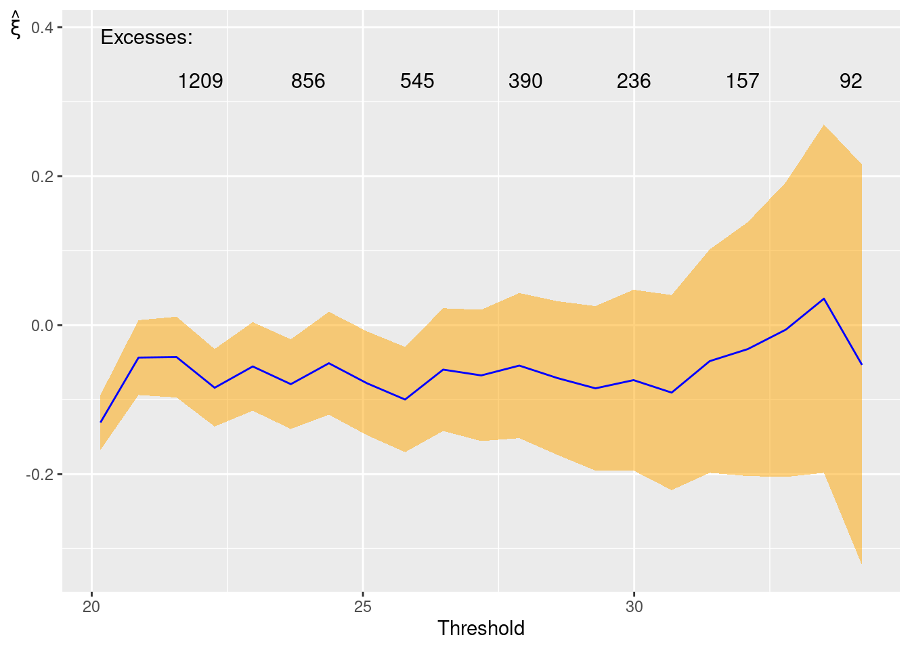
ggplot(mrl(frwind$S2,
umin = quantile(frwind$S2, .90),
umax = quantile(frwind$S2, .995),
nint = 21))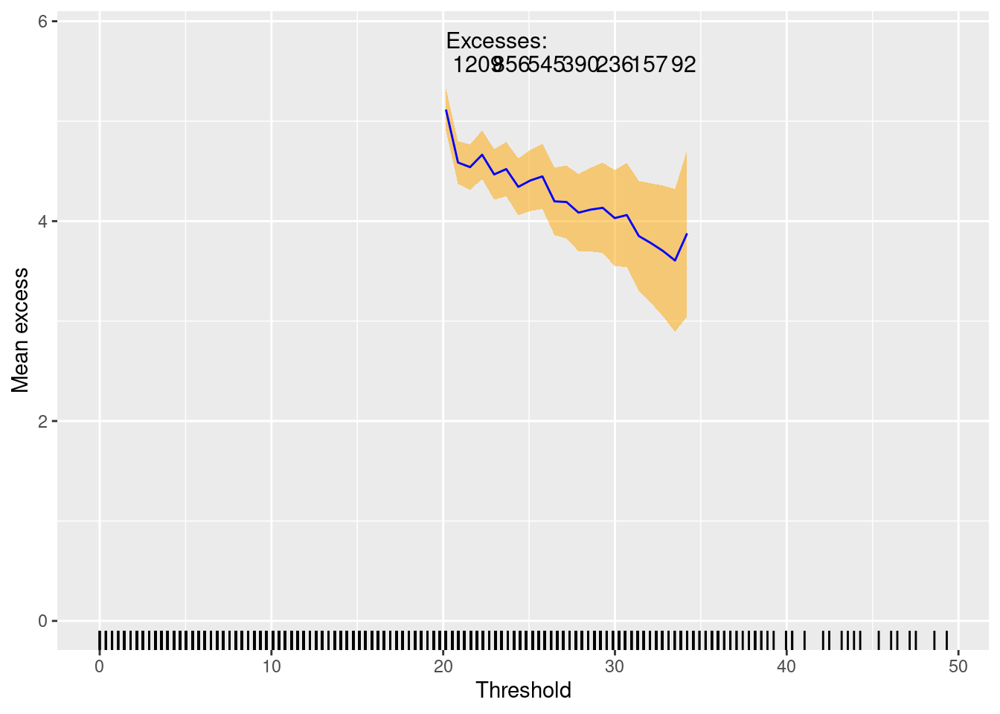
The tail index estimates looks relatively stable across different thresholds, and the mean excess plots show a relatively nice linear slope, which correspond to the tail index.
Moreover, we can explore if the estimated dependence model is sensible to the choice of the threshold. Note that running this analysis can be very time-consuming. Here, to avoid very long computations, we use a very small number of quantiles and a very low number R of bootstrap replicates, but for a serious application you should of course use larger numbers.
mrf = mexRangeFit(
x = marg,
which = "S2",
quantiles = c(0.95, 0.96, 0.97),
R = 3)
ggplot(mrf)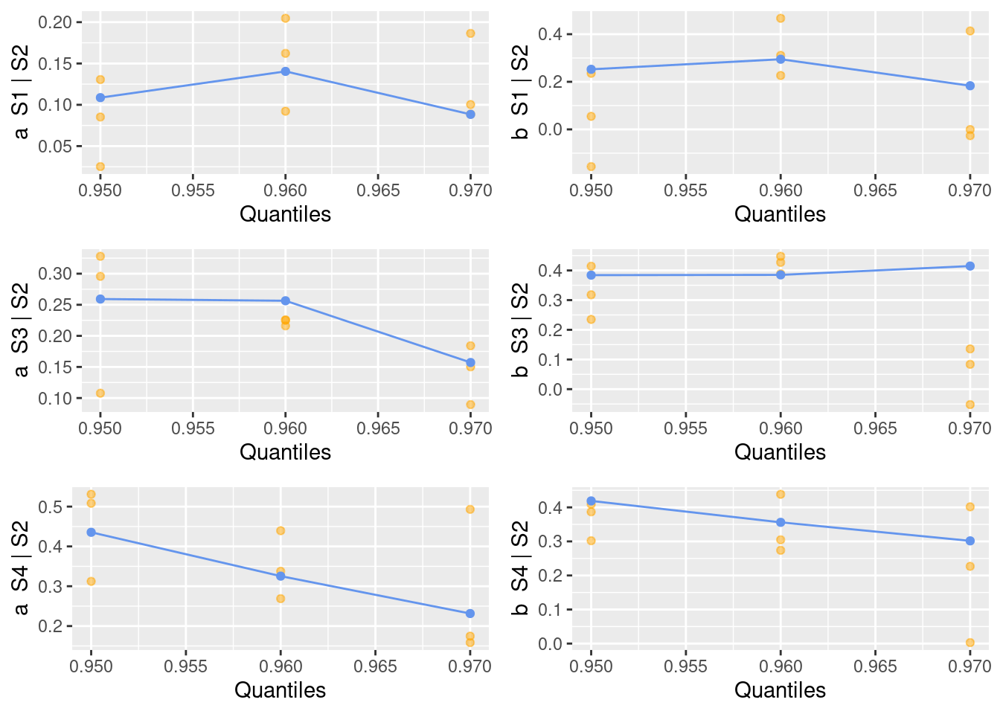
For the chosen quantiles, and given the uncertainty in the bootstrap estimates, we do not see any strong dependence of parameters on the threshold level.
Simulation and prediction
We can simulate from the fitted model but for a higher conditioning threshold than the one used during estimation.
set.seed(1)
nsim = 100
pred2 = predict(mex2, pqu=.99, nsim = nsim)
summary(pred2)predict.mex(object = mex2, pqu = 0.99, nsim = nsim)
Conditioned on S2 being above its 99th percentile.
Conditional Mean and Quantiles:
S2|S2>Q99 S1|S2>Q99 S3|S2>Q99 S4|S2>Q99
mean 35.4 27.1 30.50 23.00
5% 31.9 10.4 8.64 5.72
50% 34.4 23.6 27.20 22.70
95% 40.6 56.6 61.60 39.00
Conditional probability of threshold exceedance:
P(S2>23.76|S2>Q99) P(S1>48.6|S2>Q99) P(S3>39.6|S2>Q99) P(S4>29.16|S2>Q99)
1 0.08 0.29 0.39ggplot(pred2)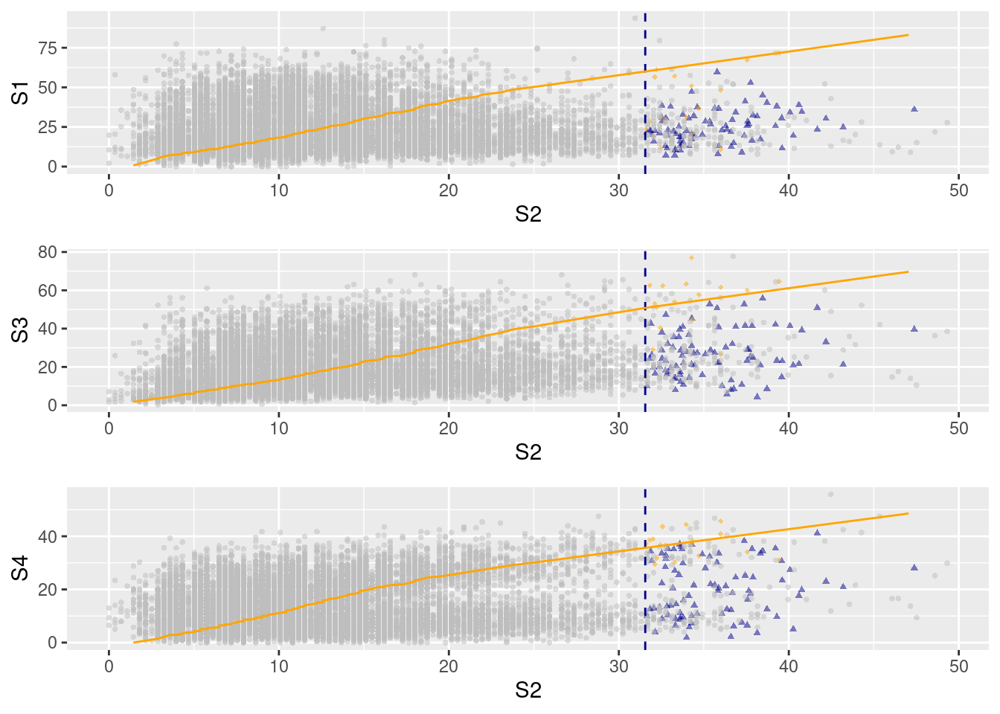
There are also commands to estimate all four conditional extremes models (for \(j=1, \ldots, 4\) here), and to conduct simulation from the estimated models.
mAll = mexAll(frwind[,paste0("S", 1:4)], mqu=0.95, dqu=rep(0.95,4))
mAllmex(data = data, which = i, mqu = mqu, dqu = dqu[i])
Marginal models:
Dependence model:
Conditioning on S1 variable.
Thresholding quantiles for transformed data: dqu = 0.95
Using laplace margins for dependence estimation.
Constrained estimation of dependence parameters using v = 10 .
Log-likelihood = -1351.649 -1417.491 -1e+40
Dependence structure parameter estimates:
S2 S3 S4
a 0.1181 0.3110 0.01
b 0.3425 -0.2607 0.01
______
Conditioning on S2 variable.
Thresholding quantiles for transformed data: dqu = 0.95
Using laplace margins for dependence estimation.
Constrained estimation of dependence parameters using v = 10 .
Log-likelihood = -1411.555 -1533.564 -1802.01
Dependence structure parameter estimates:
S1 S3 S4
a 0.1081 0.2596 0.4364
b 0.2519 0.3852 0.4198
______
Conditioning on S3 variable.
Thresholding quantiles for transformed data: dqu = 0.95
Using laplace margins for dependence estimation.
Constrained estimation of dependence parameters using v = 10 .
Log-likelihood = -1512.871 -1e+40 -1346.54
Dependence structure parameter estimates:
S1 S2 S4
a 0.20410 0.01 0.4660
b 0.04996 0.01 0.0997
______
Conditioning on S4 variable.
Thresholding quantiles for transformed data: dqu = 0.95
Using laplace margins for dependence estimation.
Constrained estimation of dependence parameters using v = 10 .
Log-likelihood = -1540.897 -1e+40 -1654.156
Dependence structure parameter estimates:
S1 S2 S3
a 0.03745 0.01 0.3048
b 0.23540 0.01 0.2503pred_sim = mexMonteCarlo(nsim, mAll)
pairs(pred_sim$MCsample)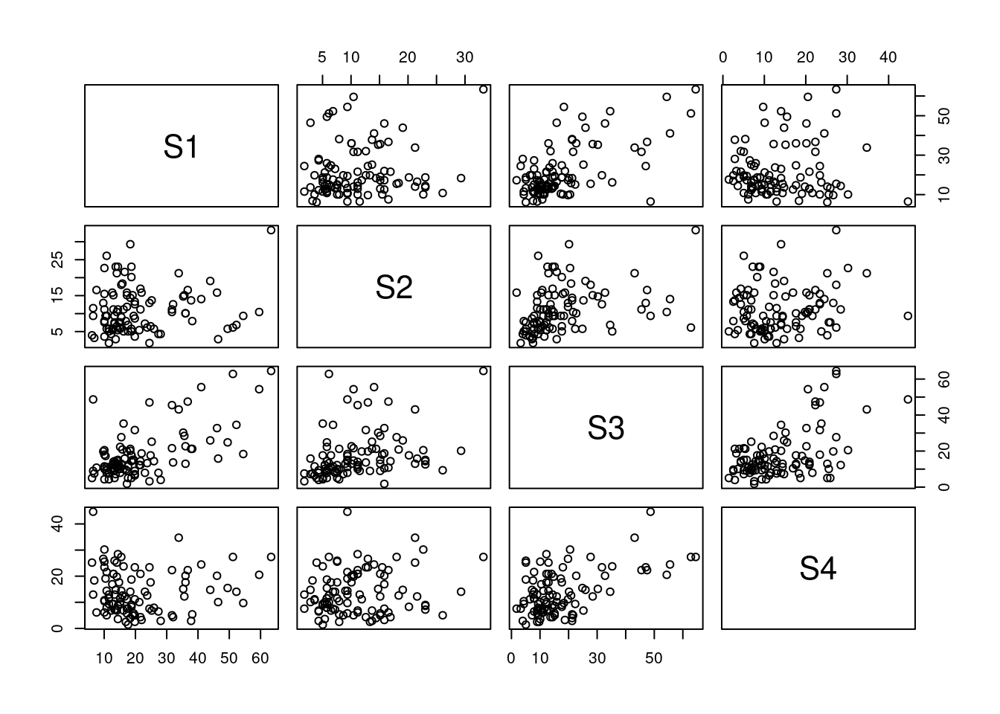
We can use the conditional extremes models to provide model-based joint exceedance curves (for a given probability) at very high levels. Let’s first plot empirical joint exceedance curves at relatively high observed levels. We here consider the two variables at \(S_2\) and \(S_3\).
wind23 = frwind[, c("S2", "S3")]
j1 = JointExceedanceCurve(wind23, 0.1)
j2 = JointExceedanceCurve(wind23, 0.05)
j3 = JointExceedanceCurve(wind23, 0.025)
ggplot(wind23, aes(S2,S3)) +
geom_point(colour="dark blue",alpha=0.5) +
geom_jointExcCurve(j1,colour="orange") +
geom_jointExcCurve(j2,colour="orange") +
geom_jointExcCurve(j3,colour="orange")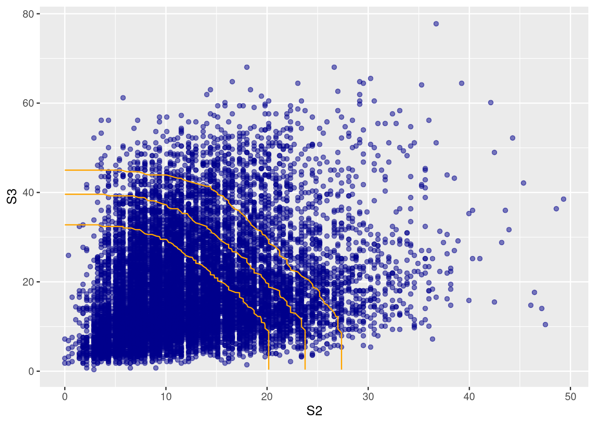
Finally, we estimate joint exceedance curves at much higher levels by combining Monte-Carlo simulations of the different conditional-extremes models. We here use a relatively small number of simulations (100) for reasons of computation time, but results can be made more precise by using a larger number of simulations. Joint exceedance curves are implemented for two variables.
pred_sim = mexMonteCarlo(
nSample = 500,
mexList = mAll)
j1 = JointExceedanceCurve(
Sample = pred_sim,
ExceedanceProb = 0.05,
which = c("S2","S3"))
j2 = JointExceedanceCurve(
pred_sim,
0.025,
which = c("S2","S3"))
j3 = JointExceedanceCurve(
pred_sim,
0.01,
which = c("S2","S3"))
ggplot(
data = as.data.frame(
pred_sim$MCsample[,c("S2","S3")]),
mapping = aes(S2, S3)) +
geom_point(col="light blue", alpha = 0.5) +
geom_jointExcCurve(j1, aes(S2,S3), col="orange") +
geom_jointExcCurve(j2, aes(S2,S3), col="orange") +
geom_jointExcCurve(j3, aes(S2,S3), col="orange")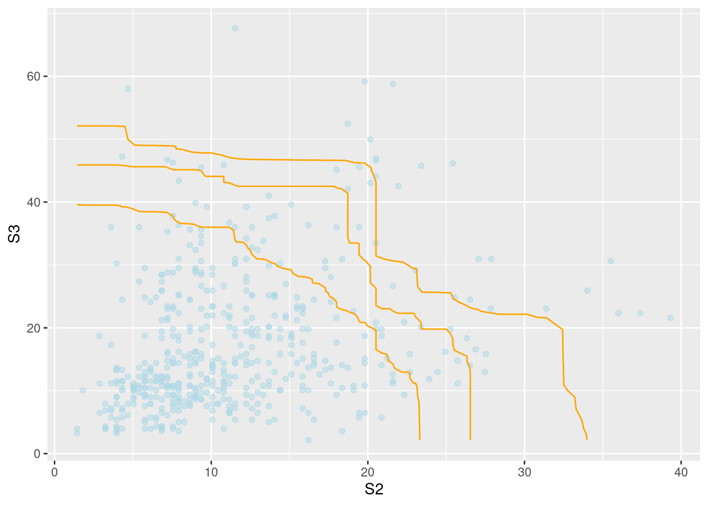
To extrapolate joint exceedance curves towards very high levels using simulation at higher conditioning thresholds in \(S_2\), we can use the predict function. Simulated values in blue correspond to those where the conditioning component is largest, otherwise the color is orange. The orange line indicates where we have the same marginal quantile levels in the two variables.
pred2 = predict(mex2, nsim = 5000, pqu = 0.995)
gg = ggplot(pred2, plot. = FALSE)
j1 = JointExceedanceCurve(
Sample = pred2,
ExceedanceProb = 0.002,
which = c("S2","S3"))
j2 = JointExceedanceCurve(
pred2,
0.001,
which = c("S2","S3"))
j3 = JointExceedanceCurve(
pred2,
0.0005,
which = c("S2","S3"))
gg[[1]] +
geom_jointExcCurve(j1, aes(S2, S3), col = "purple") +
geom_jointExcCurve(j2, aes(S2, S3), col = "purple") +
geom_jointExcCurve(j3, aes(S2, S3), col = "purple")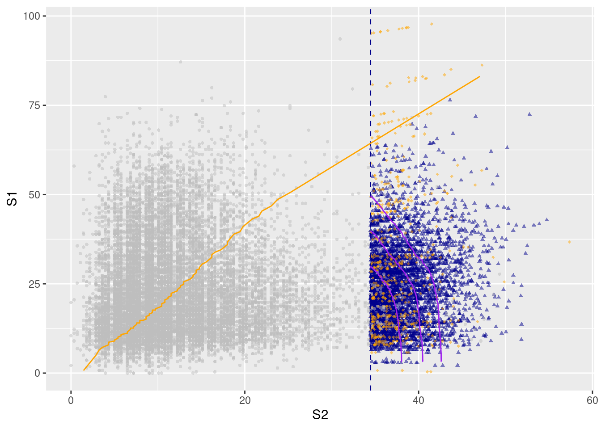